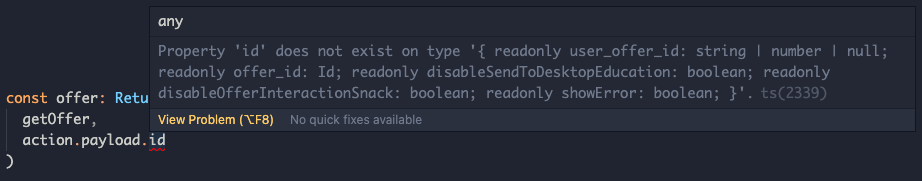
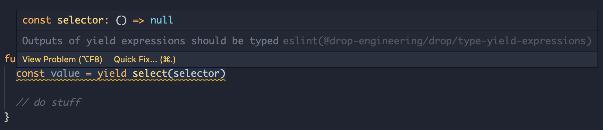

post ruby ruby-on-rails typescript static-analysis
Publish date:
= this.file.frontmatter.date
Static code analysis is the concept of examining source code and predicting how it will behave without actually running it. Often it’s used by automated tooling as part of the development process to prevent problematic code from making it into a mainline branch. It is designed to complement other processes like manual testing, automated tests and pull request reviews.
Static code analysis is something we use quite heavily at Drop, particularly on the frontend, but also on the backend. Broadly speaking, the static analysis tools we use fall under two categories:
- Type-checking (which we won’t really get into in this post)
- Linting
A core concept in static code analysis is the Abstract Syntax Tree (AST). An AST is a tree representation of source code, where each node represents a construct in the source code. The word ‘abstract’ is used because it does not represent every detail in the syntax, just detail relating to the structure & content of the source code. You can technically have different source code that maps to the same AST (for example you can format your code differently and end up with the same AST).
AST corresponding to the ruby code below:
def add(a, b)
sum = a + b
return sum
endmay look something like this:

This can also be expressed as an S-expression:
(def :add
(args
(arg :a)
(arg :b))
(begin
(lvasgn :sum
(send
(lvar :a) :+
(lvar :b)))
(return
(lvar :sum))))
Linting is usually done by inspecting the AST and flagging forbidden constructs and usage. At Drop, we use 2 main tools for this:
The typescript, react, ruby & rails communities all have rich selections of pre-written lint rules available that we use. But as we scale our team, it becomes helpful to write our own rules to enforce our internal coding standards. Enforcing coding conventions as rules that can be validated systematically and automatically has the following benefits:
- Some types of work are just better suited to machines. Enforcing a lint rule through automation is a lot more reliable than having engineers manually identify and flag it in PR reviews.
- It reduces cognitive overhead for the engineer writing code. They can now focus more on writing good business logic, and less on whether they’re violating an internal coding convention
- It allows us to keep a high bar for code consistency and maintainability
- It scales easily as we onboard new engineers. The effort required to write a rule is the same, whether we have 5 engineers contributing to the codebase, or 500.
Analyzing ASTs and writing custom lint rules sounds scary, but it really isn’t with the right tooling and with some understanding of the fundamentals. Let’s look at a few custom rules we’ve adopted at Drop and how we went about it:
Ruby
Rubocop/mdc
This is a custom rule we wrote to identify issues with how we use Mapped Diagnostic Context (MDC). MDC is something we use on the backend to keep track of basic diagnostic information through call stacks (information like user_id for example). Errors and log lines should contain this object of key/value pairs to assist with debugging.
To use MDC correctly, each method that adds to this object needs to push and pop frames in a consistent way. push in the context of a method, without a corresponding pop at the end, or vice versa will lead to very hard to reason about issues with our logs. These types of issues will not be apparent until when we need to debug a production issue, and end up unable to find the relevant logs as they’re not tagged correctly.
Below are some examples of problematic code:
# Has a mdc.push but does not have an mdc.pop at the end
def method
mdc.push({})
mdc[:user_id] = 123
# do stuff
end
# Does not have an mdc.push at the beginning
def method
# do stuff
mdc.pop
end
# Only calls mdc.pop sometimes
def method
mdc.push({})
mdc[:user_id] = 123
# do stuff
mdc.pop if some_condition
endThis is an example of correct code:
def method
mdc.push({})
mdc[:user_id] = 123
# do stuff
ensure
mdc.pop
endSimply doing a text search on the backend repo for mdc.push gives us 190 results. Going through these one by one and inspecting for problematic usage would not be very fun nor reliable. It also would not prevent another engineer who isn’t aware of this from adding problematic code in the future.
This is a great use case for an automated lint rule! A great way to start is by going to https://ruby-ast-explorer.herokuapp.com and inspecting S-expressions corresponding to some good and some bad code.
Inspecting the S-expression for some correct code looks like this:
(def :method
(args)
(ensure
(begin
(send
(send nil :mdc) :push
(hash))
(send
(send nil :mdc) :[]=
(sym :user_id)
(int 123)))
(send
(send nil :mdc) :pop)))A rule to enforce that all methods that have a mdc.push has a corresponding mdc.pop can be implemented like so:
class EnsureMdcCop < Cop
MSG = 'Make sure you have a corresponding mdc.pop. Link to best practices...'
def_node_matcher :mdc_push?, <<~PATTERN
(send (send (...) :mdc) :push ...)
PATTERN
def on_send(node)
return unless mdc_push?(node)
ancestor_ensure_blocks = node.ancestors.select do |ancestor|
ancestor.type == :ensure
end
ancestor_ensure_block = ancestor_ensure_blocks.first
unless ancestor_ensure_block # Check if mdc operations are done inside an ensure block
add_offense(node)
return
end
has_mdc_pop = ancestor_ensure_block.children.any? do |child| # check that there is a corresponding mdc.pop
has_only_mdc_pop_in_ensure = NodePattern.new('(send (send (...) :mdc) :pop ...)').match(child)
has_mdc_pop_in_ensure_with_other_lines = child.each_descendant.any? do |descendant|
NodePattern.new('(send (send (...) :mdc) :pop ...)').match(descendant)
end
has_only_mdc_pop_in_ensure || has_mdc_pop_in_ensure_with_other_lines
end
return if has_mdc_pop
add_offense(node)
end
endThis now flags any problematic code right within one’s editor & as part of Continuous Integration checks.

Typescript
Implementing lint rules for Typescript through eslint is just as easy as doing so for Ruby through rubocop. Let’s look at one.
@drop-engineering/eslint-plugin/type-yield-expressions
We make extensive use of redux-saga within the app. Redux-saga is a library to manage what are called ‘side effects’ in the redux world. A ‘side-effect’ is a response to a redux action that isn’t just a redux state update. For example: fetching data in response to a redux action.
Redux-saga works using generator functions. Generator functions by nature cannot be typed automatically, as in theory the same generator can yield values of different types.
function* generatorYieldingDifferentTypes() {
yield 1
yield "string"
}
const gen = generatorYieldingDifferentTypes()
yield1 = gen.next() // this is a number
yield2 = gen.next() // this is a stringSince sagas rely on generators, and limitations to inferring types automatically, it can in practice lead to some dangerous code. Here’s an example:
function* handleOfferActivationSaga() {
const action = yield take("OFFER_ACTIVATE_REQUEST") // 'action' here is implicitly typed to 'any'
const offer = yield select(getOffer, action.payload.id) // This action actually has an 'offer_id' parameter, not 'id'. This issue will unfortunately not be detected unless this specific case is tested manually, or someone notices in a PR
}We can avoid this issue by adding explicit type annotations to yield statements
const action: ReturnType<typeof activateOffer> = yield take(
"OFFER_ACTIVATE_REQUEST"
)
const offer: ReturnType<typeof getOffer> = yield select(
getOffer,
action.payload.id
) // This is now flagged
It turns out we can very easily encode a rule to ensure that all yield expressions have explicit typings. We start by inspecting the AST for some correct and incorrect code examples. https://astexplorer.net/ is a great tool for this (make sure you select the same parser we use in our system - @typescript-eslint/parser).
The AST for problematic code:
function* incorrectCode() {
const value = yield select(selector)
}looks something like this:
{
type: 'FunctionDeclaration',
body: {
type: 'BlockStatement',
body: [
{
declarations: [
{
type: 'VariableDeclarator',
id: { type: 'Identifier' },
init: { type: 'YieldExpression' },
},
],
},
],
},
}While the AST for correct code:
function* incorrectCode() {
const value: Type = yield select(selector)
}looks something like this:
{
type: 'FunctionDeclaration',
body: {
type: 'BlockStatement',
body: [
{
type: 'VariableDeclaration',
declarations: [
{
type: 'VariableDeclarator',
id: {
type: 'Identifier',
typeAnnotation: { type: 'TSTypeAnnotation' }, // This line is the main difference
},
init: { type: 'YieldExpression' },
},
],
},
],
},
}Using this information, we can implement a custom lint rule to enforce that all yield expressions have an explicit typing. Below is code that does this:
module.exports = {
meta: {
docs: { description: "Outputs of yield expressions should be typed" },
},
create: context => {
return {
VariableDeclaration(node) {
const isYieldExpression =
get(node, "declarations.0.init.type") === "YieldExpression"
const hasTypeAnnotation =
get(node, "declarations.0.id.typeAnnotation.type") ===
"TSTypeAnnotation"
if (isYieldExpression && !hasTypeAnnotation)
context.report({
node,
message: "Outputs of yield expressions should be typed",
})
},
}
},
}
TLDR: Enforcing internal coding conventions through custom static checks is generally not as hard as it sounds. Doing so enables us to write more maintainable, higher quality code that automatically scales with the team.
References:
- Abstract Syntax Trees
- Static code analysis
- AST explorer for many languages
- Rubocop: Custom Cops for Custom Needs
Related posts
LIST WITHOUT ID "[["+file.name+"]]" + " " + dateformat(date, "yyyy MMM dd")
FROM #blog/post
WHERE contains(file.tags, "static-analysis") AND file.name != this.file.name